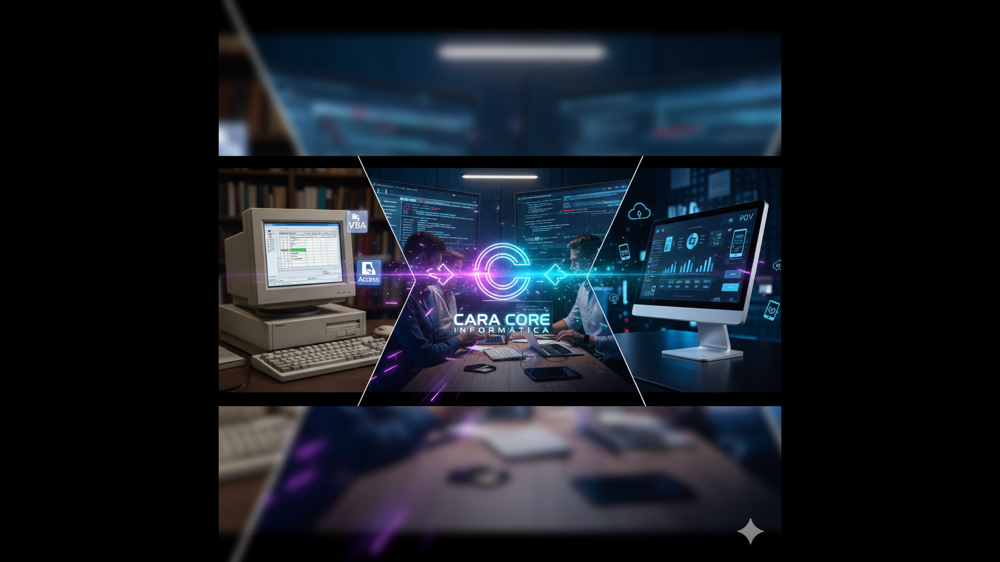

Cara Core Informática: Nossa Jornada de Evolução e Inovação
Do VBA ao PDV Próprio: Uma Trajetória de Superação
Nossa história começou com a automação de cálculos tributários no varejo, utilizando VBA no Excel e Access (artigo 20). Naquele momento, o desafio era simplificar processos fiscais e garantir precisão em um cenário repleto de regras e exceções. O VBA foi nosso primeiro laboratório de inovação, onde aprendemos a ouvir o cliente, entender suas dores e entregar soluções sob medida.
Com o tempo, percebemos que a transformação digital exigia mais. O mercado pedia agilidade, integração e uma experiência de usuário superior. Foi assim que nasceu o CaraCore PDV: um sistema próprio, desenvolvido do zero, pensado para o varejo brasileiro e moldado por anos de aprendizado prático.
Inovação ContÃnua: O DNA da Cara Core
Cada nova versão do nosso PDV reflete o compromisso com a excelência. Investimos em performance, segurança, usabilidade e, principalmente, em ouvir quem está na linha de frente. Ouvimos operadores, gestores e clientes para transformar feedback em melhorias reais. Nossa evolução é feita de pequenas grandes conquistas: do leitor de código de barras via câmera ao dashboard gestor em tempo real, da configuração fiscal simplificada à conformidade total com a LGPD.
O Futuro: Mais do que Tecnologia, Parceria
Acreditamos que tecnologia só faz sentido quando aproxima pessoas e resolve problemas reais. Por isso, seguimos inovando, testando, errando e acertando — sempre ao lado dos nossos clientes. Nossa missão é ser mais do que um fornecedor: queremos ser parceiros na jornada de crescimento de cada negócio que confia na Cara Core Informática.
Destaques do CaraCore PDV
O futuro do varejo já chegou: o primeiro PDV pronto para a Reforma Tributária 2026-2033.
- Motor Fiscal Inteligente: Atualização automática de alÃquotas até 2033, cálculo CBS/IBS conforme cronograma da Reforma Tributária Brasileira.
- Pix Split: Liquidação automática de impostos, QR Code instantâneo, transparência total.
- Dashboard Gestor: Lucro lÃquido, créditos tributários, relatórios e gráficos em tempo real.
- Leitor de Código de Barras: Via câmera, busca inteligente, atalho F4.
- Interface Moderna: Design responsivo, textos de ajuda, navegação intuitiva.
- Alta Performance: HTMX, Thymeleaf Fragments, carregamento otimizado.
- Modo Offline-First (Antifrágil): Operação 100% offline, sincronização automática, resiliência a falhas de rede.
- Modo de Contingência: SQLite local + SMS via ADB, protocolo compacto, zero perda de vendas.
- Segurança de Dados: LGPD, criptografia AES-256, autenticação JWT, backup cloud, monitoramento 24/7.
- Recuperação de senha por SMS: Envio automático ao celular do operador (Premium).
- Planos Free e Premium: Free — 100 vendas/mês, 10 SMS de recibo/mês; Premium — automações avançadas, suporte prioritário.
- Vendas mais rápidas = mais clientes atendidos
- Menos espera = melhor experiência do cliente
- Sistema mais responsivo = menos frustração dos operadores
- Gestão fiscal automatizada = menos erros e mais segurança
Funcionalidades Empresariais
| Módulo | Descrição |
|---|---|
| PDV (Ponto de Venda) | Interface otimizada para operação de caixa com múltiplas formas de pagamento |
| Gestão de Vendas | Controle completo do ciclo de vendas com rastreamento de status e histórico |
| Cadastro de Produtos | Gerenciamento de catálogo com código de barras, unidades de medida e controle de estoque |
| Gestão de Clientes | Cadastro e consulta de clientes com histórico de compras |
| Controle de Estoque | Monitoramento em tempo real de disponibilidade por loja |
| Dashboard Administrativo | Painel executivo com métricas de vendas, produtos mais vendidos e indicadores de desempenho |
| Relatórios Gerenciais | Geração de relatórios em PDF para análise de vendas, estoque e performance por loja/vendedor |
| Gestão de Operadores | Controle de acesso com perfis de usuário (Administrador, Operador, Visitante) |
| Multi-Loja | Suporte a múltiplas unidades comerciais com estoque independente |
| Configuração Fiscal | Gestão completa da Reforma Tributária 2026 com cálculo automático de CBS e IBS |
| PIX Split Configurável | Toggle para habilitar/desabilitar divisão automática de pagamentos |
| Histórico de AlÃquotas | Rastreamento completo de alterações nas alÃquotas tributárias com auditoria |
| Modo Offline-First | Arquitetura que funciona perfeitamente mesmo sem internet. Vendas salvas localmente e sincronização automática quando online. |
| Modo de Contingência | Sistema nunca para de vender. SQLite local + SMS via ADB para reportar vendas crÃticas mesmo sem internet. |
| Planos Free e Premium | Free: 100 vendas/mês, 10 SMS de recibo/mês. Premium: automações avançadas, suporte prioritário. |
| Configuração de E-mail | Painel em Configuração; envio automático de relatórios ao contador (Premium). |
| Recuperação de senha | E-mail, WhatsApp, Telegram; SMS para o celular do operador (Premium). |
Uma Jornada de Evolução: CaraCore PDV para Todos
Imagine que você está conversando com um gestor ou empresário que nunca viu um sistema de PDV moderno. A história da Cara Core Informática começa lá atrás, quando tudo era feito em planilhas, cálculos manuais e muita conferência. O tempo passava devagar, cada venda exigia atenção redobrada, e o medo de errar nos impostos era constante.
Foi nesse cenário que nasceu nossa vontade de inovar. O primeiro passo foi automatizar cálculos tributários com VBA no Excel e Access (artigo 20). Era como dar um motor novo para um carro antigo: tudo ficou mais rápido, mas ainda faltava conforto, segurança e visão de futuro.
Com o tempo, ouvimos cada vez mais os operadores, os gestores e os clientes. Eles queriam agilidade, integração, facilidade. Queriam que a tecnologia resolvesse problemas reais, sem complicar. Assim, começamos a desenhar o CaraCore PDV: um sistema que não é só para quem entende de informática, mas para qualquer pessoa que quer vender, controlar e crescer.
Hoje, o CaraCore PDV é como um copiloto para o varejo. Ele faz os cálculos fiscais automaticamente, mostra gráficos e relatórios em tempo real, lê código de barras pela câmera do celular, funciona até sem internet e protege os dados dos clientes. Tudo isso com uma interface simples, que qualquer pessoa aprende a usar em minutos.
Para o executivo, o sistema entrega o que mais importa: controle, segurança, visão estratégica e tranquilidade para focar no crescimento. Para o operador, é rapidez, menos erros e mais vendas. Para o cliente, é agilidade no atendimento e confiança.
A evolução da Cara Core Informática é feita de escuta, coragem e parceria. Cada funcionalidade nasceu de uma necessidade real, cada melhoria veio de um feedback. E o futuro? Está sendo construÃdo junto com quem usa o sistema todos os dias.
Se você quer entender como a tecnologia pode transformar o seu negócio, basta olhar para o CaraCore PDV: uma solução feita para todos, pronta para o presente e preparada para o futuro.
Referências
- Automatizando Cálculos Tributários no Varejo com VBA no Excel e Access
2024_07_07_article_20.html
Hashtags
Contato
- E-mail: suporte@caracore.com.br
- Site: www.caracore.com.br
- LinkedIn: Cara Core Informática
Conecte-se conosco no LinkedIn para mais conteúdos sobre tecnologia, inovação e a jornada da Cara Core Informática!
Seguir no LinkedIn
Artigo publicado em 20 de fevereiro de 2026
© 2026 Cara Core Informática. Todos os direitos reservados.